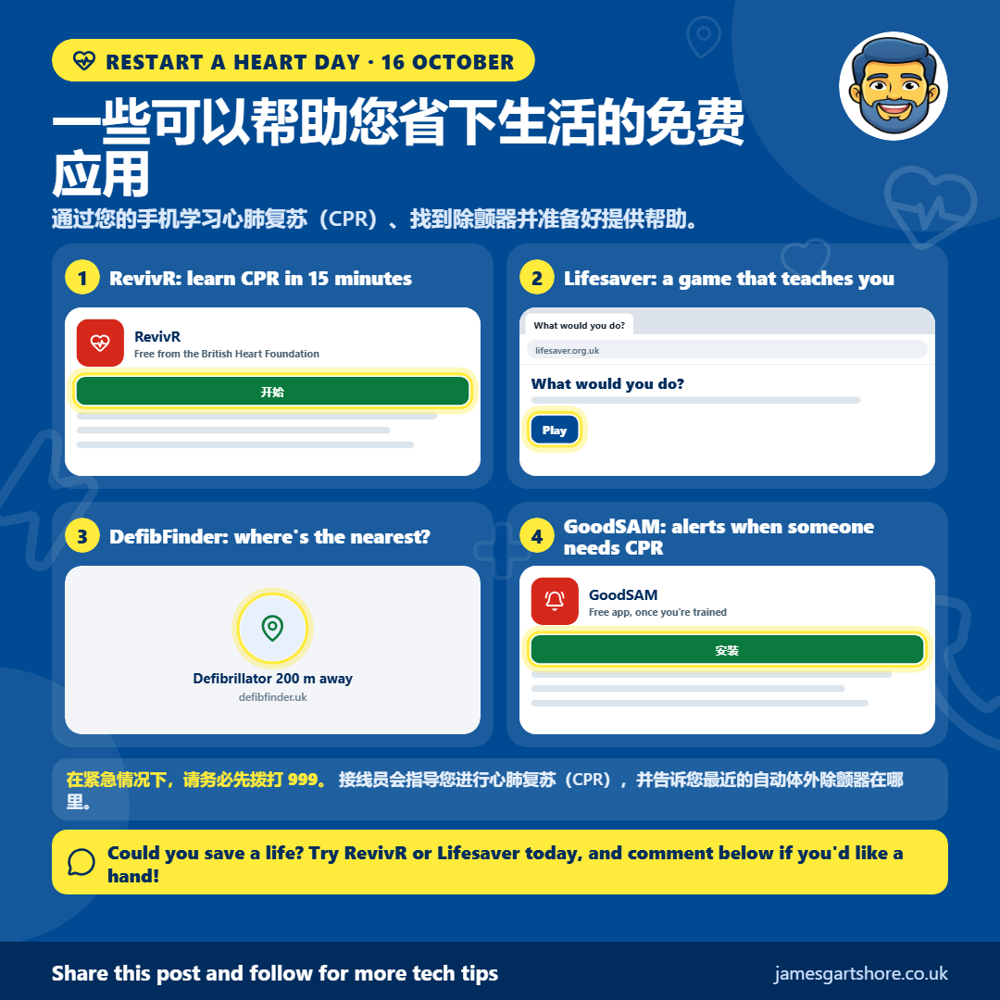

一些可以帮助您省下生活的免费应用
由 James Gartshore · · 健康和福祉简单来说
- RevivR: 在大约 15 分钟内学习心肺复苏 (CPR)，在垫子上练习并实时获得反馈。(British Heart Foundation 免费)
- Lifesaver: 一个互动游戏，让你置身于真实的紧急情况中，教你该做什么。 (免费应用或 lifesaver.org.uk)
- DefibFinder: 一个地图，显示你附近公共除颤器（defibrillators）的位置，这样你就能在需要的时候知道它们在哪里。 (defibfinder.uk 免费)
- GoodSAM: 一旦接受培训，注册即可在附近有人需要心肺复苏时收到警报。 (免费应用)

大家好，今天是‘重启心脏日’，所以我想分享一些可以帮助你们学习心肺复苏 (CPR) 并准备好帮助别人应对心脏骤停的免费应用和网站。
RevivR 来自英国心脏基金会，教你大约 15 分钟内学习心肺复苏 (CPR)。你可以在手机或电脑上操作，在垫子上练习胸部按压，它会实时给你反馈。只需搜索“ BHF RevivR”。
Lifesaver 来自英国复苏委员会 (Resuscitation Council UK)，是一个免费的互动游戏，让你置身于真实的紧急情况中，让你做出决定。这是学习该做什么以及如何使用除颤器的绝佳方式，也适合老年儿童。你可以将其下载为应用或在 lifesaver.org.uk 上使用。
DefibFinder 是一个免费网站，可以显示您附近的自动体外除颤器地图。只需在 defibfinder.uk 输入您的邮政编码即可。值得一看，看看离您最近的在哪里，这样您就知道自己是否需要它。很多人担心使用自动体外除颤器，但它就是为任何人设计。一旦您打开它，它会大声告诉您具体该做什么，并且只有当有人需要时它才会给电击。
完成所有四个急救场景后，您还可以注册成为 GoodSAM 的志愿者。如果附近有人心脏骤停，它会给您发警报，这样您可以在救护车到达之前提供帮助。
最重要的是，如果有人倒下且呼吸不正常，请务必先拨打 999 并将手机设置为扬声器。接线员会一步一步指导您进行心肺复苏（CPR），并可以告诉您最近的自动体外除颤器在哪里。
如果您今天有 15 分钟空闲时间，RevivR 或 Lifesaver 非常值得一试。如果您想了解如何开始，只需 给我发条消息，我将尽我所能提供帮助。
希望这能帮到你，如果你觉得有用，也请分享给任何可能觉得它有用的朋友。